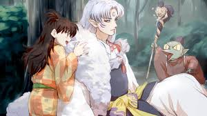

About Sesshomaru
He's a demon who kills people and stuff.
Maru and his "family"
Sesshomaru's Characteristics
- Hates his family because of Inu's mother
- Wants his brothers sword
- Cares for the human child who follows him,Rin
Sesshomaru's Friends
Doesn't have but one friend but so click on the link below to read more.